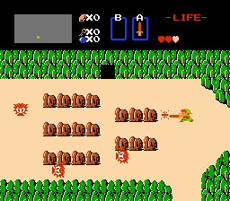

Pour le monde du jeu vidéo, les années 80 resteront une période spéciale. Du krach de 1983 qui a failli les faire disparaitre et de leur renaissance grâce à l’apparition de la NES. Ces années resteront marquées à tout jamais dans leur histoire.
Le jeu vidéo et son histoire :
Le Krach de 83 :
Le krach de 83 a touché les États-Unis principalement et a failli tuer l’industrie du jeu vidéo. La raison est à cause de sa popularité.
Les jeux vidéo sont théoriquement nées en 1950 mais leur succès a commencé en 1970 grâce à Pong et la popularisation des bornes d’arcade. Le marché était en pleine croissance exponentielle.
Ce qui a enduit plein d’entreprise a se lancer dans la fabrication de jeux vidéo en frénésie pour se faire du bénéfice. Même si il existait des bonnes entreprises avec des bons programmeurs et game designers, la plupart des entreprises voulaient simplement profiter de ce nouveau marché prometteur ce qui résulta d’un influx de mauvais jeux dans le marché.

À cause de ces mauvais jeux, les consommateurs perdaient confiance et arrêter d’acheter les produits, les vendeurs n’arrivaient plus à vendre les jeux en stock et ni à les retourner, du coup ils baissaient les prix pour vendre leurs stocks. Ce qui les a fait penser que les jeux vidéo n’étaient plus populaires et qu’il s’agissait d’une mode, donc ils ont arrêtés de renouveler leurs stocks. Les éditeurs ne pouvaient plus vendre leurs jeux et la plupart ont fait faillite, ceux qui ont pu résister ont cessé leur activité dans ce domaine.
Ce crash a entraîné plusieurs conséquences à long terme pour cette industrie hormis son effondrement aux États-Unis. La première est que l’industrie du jeu vidéo a migré au Japon avec Nintendo en tête. La deuxième est l’introduction de réglementations plus strictes comme le copyright de Nintendo (« Seal of Quality ») qui a été introduit pour lutter contre l’espionnage industriel et s’assurer que pas n’importe qui peut créer et vendre des jeux pour leur console. Et la dernière est la chute d’Atari en tant que géant de cette industrie.
La renaissance :
Nintendo vendra la NES d’abord au Japon (15 juillet 1983) puis en Amérique (18 octobre 1985) et enfin en Europe (Octobre 1987).
Pour que la NES arrive à se vendre et ainsi ne pas faire mauvaise presse à cause du krach de 83, Nintendo va faire passer sa console de salon comme un jouet intelligent avec l’accessoire de jeu ROB (Robotic Operating Buddy) et ses 2 jeux : Gyromite et Stack-Up.
ROB séduit le public mais pas assez pour refaire décoller le jeu vidéo notamment à cause de sa complexité à faire fonctionner, relativement lent, fragile, bruyant et n’ayant très peu d’utilité (Gyromite peut totalement être jouable sans ROB et le jeu devient beaucoup plus facile).

Peu de mois après la sortie de ROB, en fin 1985, un jeu vidéo à lui tout seul va révolutionner l’industrie du jeu vidéo et ainsi redonner confiance aux consommateurs et à la presse, ce jeu vidéo est Super Mario Bros.
Grâce aux talents derrière ce projet, Nintendo ont réussi à relancer à la fois l’industrie et l’intérêt du public autour du jeu vidéo. Super Mario Bros révolutionna le jeu vidéo en imposant un level design à tous les jeux qui lui succèderont. Des mécanismes populaires seront repris par la suite comme le défilement horizontal (scrolling horizontal), les boss ou encore les raccourcis secrets. Super Mario Bros fut un succès colossal en se vendant à plus de 40 millions d’exemplaires dans le monde.
Jeux phénomènes :
Il existe d’autres jeux qui mérite de la reconnaissance, ils ne sont pas aussi révolutionnaires comme Super Mario Bros, mais il s’agissait de tout même de phénomènes pour cette époque dans le monde du jeu vidéo.
The Legend of Zelda :
The Legend of Zelda sorti en 1986 au Japon et puis en 1987 pour le reste du monde. Ce jeu d’action aventure est considéré comme l’un des premiers open world grâce à sa carte énorme qu’on peut explorer librement pour chercher des donjons ou d’autres secrets cachés, il a été acclamer par la presse qui qualifie ce jeu comme une merveille et qui complimente son game design et surtout sa musique.
Metroid :

La sortie de Metroid en 1986 a bien été reçu, même s’il n’arrive pas à la hauteur de Zelda, il a la particularité d’être un des contributeurs a la création du sous-genre « Metroidvania » avec Castlevania. Les Metroidvania sont un sous-genre du jeu vidéo dans lequel la carte est connectée par plusieurs mondes dont le joueur peut explorer, cependant certaines salles ne seront pas accessibles tout de suite et il devra y revenir plus tard pour les débloquer une fois qu’il a l’arme ou l’outil spécifique pour le faire.Le game design de ces jeux est souvent centrée sur l’exploration et le backtracking (retour sur ses pas). Le jeu n’a pas seulement été félicité pour son game et level design, certaines critiques de la presse du jeu vidéo ont complimenté sa variété d’ennemies, l’immensité de sa carte, la diversité des objets à trouver en explorant mais ils ont surtout adoré la jouabilité pratique : Le personnage est fluide à contrôler et répond parfaitement aux commandes.
Castlevania :

Castlevania sorti en 1986 a très bien était reçu. Recevant une note de 34 sur 40 dans le magazine Famitsu au Japon. Il est connu pour être le contributeur principal de la création du sous-genre « Metroidvania » et surtout pour son gameplay, game design et level design qui ont montré l’exemple pour comment bien réussir un jeu vidéo, il est mis au même niveau des jeux fondateurs qui ont révolutionné le jeu vidéo comme Super Mario Bros. Le jeu arrive à combiner le game et level design ensemble, par exemple : le premier niveau du jeu ne contient pas d’ennemies mais des vases cassables qui lâchent des objets comme des cœurs ou des améliorations permettant de faire comprendre aux joueurs que tous les éléments cassables donnent des bonus. Au second niveau, de petit nombre d’ennemies apparaissent, permettant au joueur d’expérimenter les sauts et le combat. Cette réflexion de game design était révolutionnaire car il n’y avait pas besoin de lire de manuels pour comprendre comment jouer au jeu et surtout la plupart des jeux de cette époque se commencer avec un premier niveau chaotique. Un autre point fort du jeu est sa courbe de difficulté progressive, ce qui permet à n’importe qui de jouer au jeu et de terminer les premiers niveaux Une fois plus loin, il faudra réfléchir et optimiser son équipement pour vaincre des ennemies plus compliquées lorsqu’on a appris les bases.